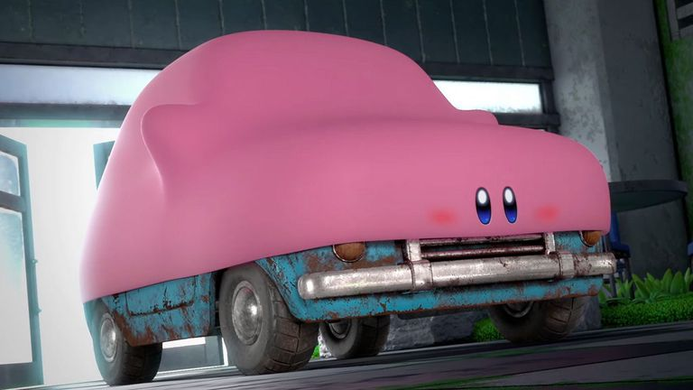

Embora existam teorias de que ele foi batizado em homenagem a uma marca de aspiradores de pó, a versão mais aceita é que o nome foi uma homenagem ao advogado John Kirby, que defendeu a Nintendo em um processo judicial crucial contra a Universal City Studios nos anos 80. Outra curiosidade famosa envolve a paleta de cores do personagem: enquanto Masahiro Sakurai insistia que ele fosse rosa, Shigeru Miyamoto queria que ele fosse amarelo, e essa disputa interna resultou no Kirby amarelo aparecendo frequentemente como o "segundo jogador" em diversos títulos da franquia. Além disso, Kirby possui uma anatomia única que desafia a lógica, sendo descrito em manuais oficiais como tendo cerca de 20 centímetros de altura, o que faz dele um herói minúsculo, apesar de sua força ser capaz de destruir planetas.

Kirby na versão Mouthful Mode envolvendo um carro
Um dos detalhes mais engraçados da história da marca é a estratégia de marketing conhecida como "Kirby Bravo". Durante anos, a Nintendo of America alterava as capas dos jogos para que o Kirby, que no Japão sempre aparecia sorridente e fofo, tivesse sobrancelhas franzinas e uma expressão de raiva, acreditando que isso atrairia mais o público ocidental interessado em ação. No campo das habilidades, o estômago de Kirby é oficialmente definido como uma dimensão infinita de puro vácuo, o que explica como ele consegue engolir objetos muito maiores que ele mesmo sem mudar de peso ou tamanho. Para fechar com chave de ouro, Kirby detém um recorde inusitado na cultura pop: em 2022, a música "Meta Knight's Revenge", de Kirby Super Star, ganhou um Grammy na categoria de Melhor Arranjo Instrumental, tornando a bolota rosa um dos poucos personagens de videogame a estar indiretamente ligado a um dos maiores prêmios da indústria fonográfica mundial.